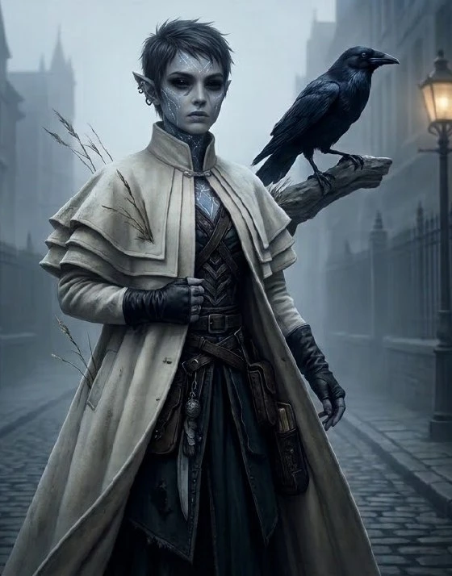
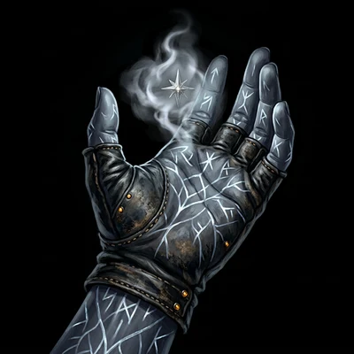
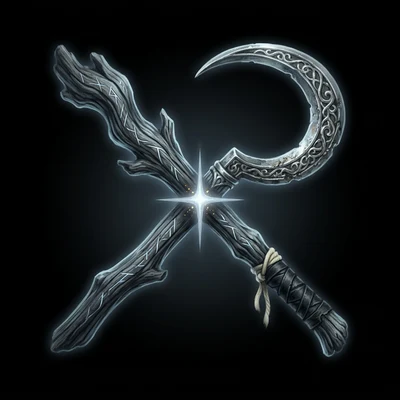

Инвентарь
Снаряжение друида и амулет «Звёздная карта» появятся здесь в следующих обновлениях.

…туман внизу, звёзды над ним


Снаряжение друида и амулет «Звёздная карта» появятся здесь в следующих обновлениях.

Фигура Арадии и надетые вещи появятся здесь в следующих обновлениях.